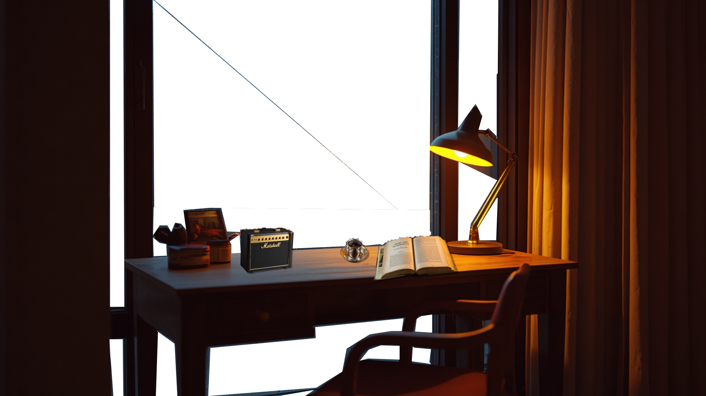

[ Come in out of the rain ]

Midnight rain washing over the quiet city outside
A lingering warmth from the freshly poured filter coffee
Distant notes of old songs filling the dark space
Hours slowing down frame by frame in this room
Unread pages waiting patiently under the lamplight
"Because..."
"I know nothing with any certainty, but the sight of the stars makes me dream." — Vincent van Gogh